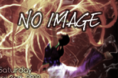
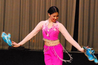
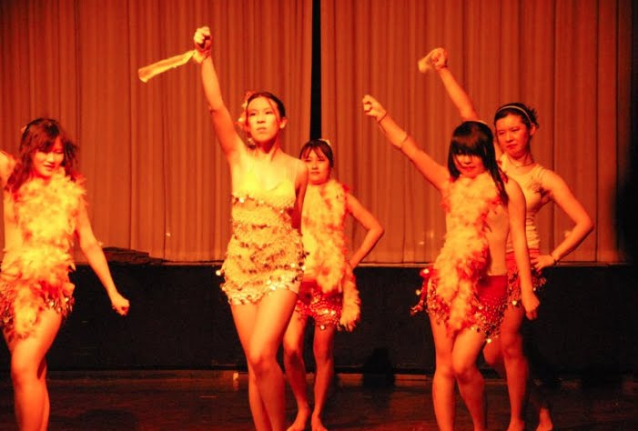
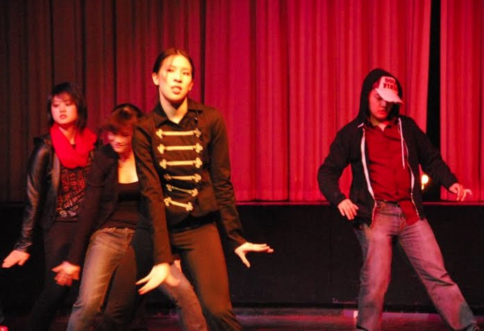

Phoenix Rising
In April of 2009, MIT Asian Dance Team presented its first showcase: Phoenix Rising, a collection of dances combining powerful melodies and metaphoric choreography. This program represents the longevity, strength, harmony, and grace of the ancient Chinese phoenix fenghuang. The four parts of the program (Fire, Energy, Nacarat, Grace), when taken as an acronym, read "feng," meaning "phoenix." Hover over the photos below for more information about the pieces!
Click to see the photos and watch the videos!
 |
 |
 |
| 01 - Happiness | 02 - Festive Medley | 03 - Syncopasian |
|  |  |
|
| 04 - MIT Oori | 05 - So Hot | 06 - Life is Beautiful |
|  | ||
| 07 - Intricacy | 08 - MIT Chinese Ensemble | 09 - Naluwa Love Song |
|  |  |
|
| 10 - All the Best to Women | 11 - Chinese Yo-yo | 12 - Ladies of Uyghur |
 |
 | |
| 13 - Dancing Diva | 14 - One Red Leaf | 15 - Ring Ding Dong |
 |
 |
|
| 16 - Gee | 17 - Country Courtship | 18 - Ribbon Exquisite |
 |
||
| 19 - Encore - Nobody |
Photography courtesy of Kojo Acquah and Joseph Lee
Previous Showcases
Click on the images below to learn more about our other showcases! Feel free to also browse our photo gallery and performance videos!
 |
 |
 |
| Inspirasian | Limitless | Inspirasian |
| Spring 2013 | Fall 2012 | Spring 2012 |
 |
 |
 |
| Unforgettable | Inspirasian | Resonant Blue |
| Fall 2011 | Spring 2011 | Fall 2010 |
 |
||
| Phoenix Rising | ||
| Spring 2010 |